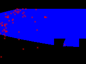
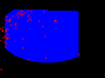
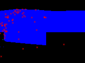

Current version: 1.1 alpha Developer(s): Ricardo Scachetti Pereira
Accepts categorical maps: no Needs absence points: yes
Author(s): Stockwell, D. R. B., modified by Ricardo Scachetti Pereira
Stockwell, D. R. B. 1999. Genetic algorithms II. Pages 123-144 in A. H. Fielding, editor. Machine learning methods for ecological applications. Kluwer Academic Publishers, Boston. Stockwell, D. R. B., and D. P. Peters. 1999. The GARP modelling system: Problems and solutions to automated spatial prediction. International Journal of Geographic Information Systems 13:143-158. Stockwell, D. R. B., and I. R. Noble. 1992. Induction of sets of rules from animal distribution data: A robust and informative method of analysis. Mathematics and Computers in Simulation 33:385-390.
GARP is a genetic algorithm that creates ecological niche models for species. The models describe environmental conditions under which the species should be able to maintain populations. For input, GARP uses a set of point localities where the species is known to occur and a set of geographic layers representing the environmental parameters that might limit the species' capabilities to survive.
Parameters (4):
Data type: Integer Domain: [1, oo) Typical value: 400
Meaning: Maximum number of iterations (generations) run by the Genetic Algorithm.
Data type: Real Domain: 0, Typical value: 0.01
Meaning: Defines the convergence value that makes the algorithm stop (before reaching MaxGenerations).
Data type: Integer Domain: 1, Typical value: 50
Meaning: Maximum number of rules to be kept in solution.
Data type: Integer Domain: 1, Typical value: 2500
Meaning: Number of points sampled (with replacement) used to test rules.
Since GARP is a non-deterministic algorithm, it produces a different result each time it runs with the same input. The following images show models in the environmental space (temperature x precipitation) generated with the same input (Furcata boliviana localities dataset) using the default parameters.
|  |
| fig. 1: model 1 |
|  |
| fig. 2: model 2 |
|  |
| fig. 3: model 3 |